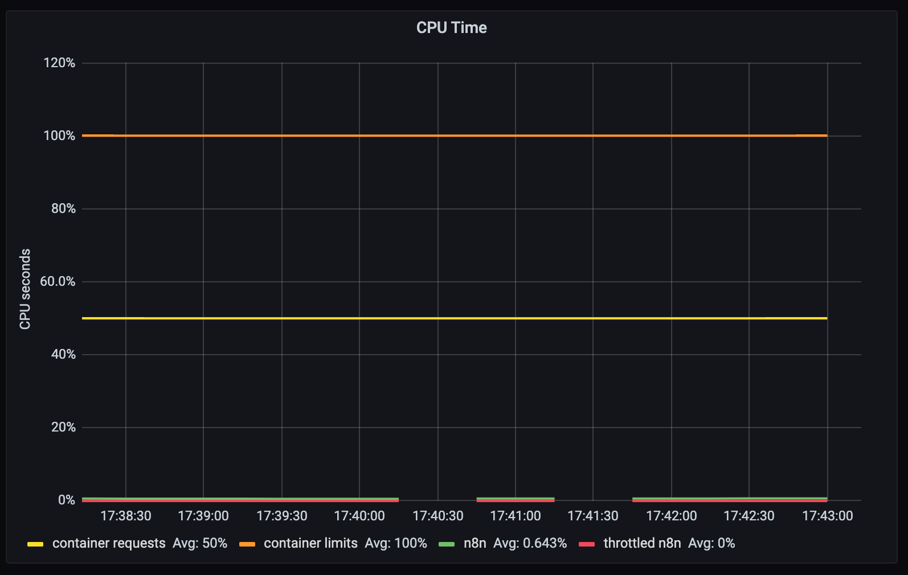
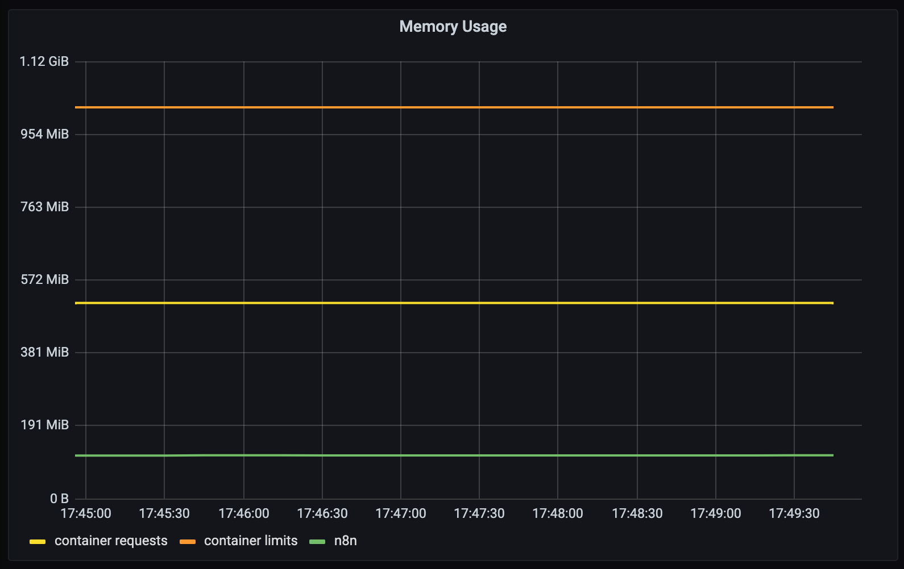

This post is a continuation on “Setup n8n on Kubernetes”, so most of the things we talk here assume that you’ve followed/read this one as well.
You have your own n8n instance running in Kubernetes, taking advantage of all amazing functionality and capabilities of it, but you are still going in blind right now. I mean, how can you check if your service is healthy? Is it running? How much memory is it using? 🤔
Since version @0.111.0 n8n has the ability to expose its metrics from a "/metrics” endpoint. This is great because with that we can setup a Grafana dashboard, reading from a Prometheus data source, which scrapes all containers in our Kubernetes cluster emitting metrics from, you guess it, a "/metrics” endpoint 😁.
If you want to check how we’ve done that, feel free: https://github.com/n8n-io/n8n/pull/1515
So, as the documentation explains, we just need to update our n8n configuration to have the following extra environment variable:
|
|
And restart our n8n deployment so these changes take effect:
|
|
There are other options related to how n8n can emit metrics, which you can check here: https://docs.n8n.io/reference/configuration.html#prometheus
If we go again to your browser and check the “/metrics” endpoint, we should see something like this:

This by itself is not that useful… although, we can go a step forward and setup a dashboard with this information. 🚀
Show in Grafana
We will save ourselves some time and just use helm, which basically is a package manager for Kubernetes. It helps us with installing most of what we need to make this work.
To install it, we can just run this:
|
|
For this example we will install both Grafana and Prometheus, but in a different namespace just so we don’t end up with to much stuff on our default one (it’s also good practice to create different namespaces for specific use cases 🙌 ).
|
|
Install Grafana + Prometheus helm charts
Following Prometheus installation guide we can just add the corresponding helm charts and install our requirements:
|
|
To check that everything is up and running, we can just kubectl get all, like so:
|
|
Exposing Grafana Dashboard
So right now both our services are not exposed. For example, in order for us to access Grafana we need to port-forward to the service:
|
|
Instead, we can just change our service type form ClusterIP to NodePort.
If you want to understand better what types of Kubernetes services exist, this blogpost explains it perfectly!
There are a couple ways to get this done, we can:
1️⃣ Create a new service which has type NodePort
With this solution we end up with two services;
|
|
2️⃣ Delete and create a new one;
|
|
3️⃣ Update the existing one.
Which I’ve end up preferring:
|
|
This means that we now have a dedicated port on our host machine to access these services:
|
|
Connecting Grafana to Prometheus data source
Finally, we just need to configure Grafana to use Prometheus as its main data source.
Here we are just following the tutorial on Prometheus documentation.
Before opening Grafana we need to get the admin account password, which we can do by running:
|
|

Create n8n Dashboard
Since n8n runs on top of NodeJS, we should be able to just use any Grafana dashboard that shows metrics for NodeJS servers.
I’ve end up using the most downloaded one on Grafana’s dashboards directory, with some extra widgets.
To install the base dashboard, we just need to import it either by the URL (https://grafana.com/grafana/dashboards/11159) or Dashboard ID (11159):

You might wonder why we don’t have any metrics showing up… well, the way Prometheus works is by scrapping (pulling) data from the “/metrics” endpoint of a pod, but Prometheus only knows how to find that service if we “annotate” that pod with specific parameters:

❗️ We can do it like this because the helm chart for Prometheus already had that configured out of the box. To check that in detail go here. (Image source).
So, in order for Prometheus to find our n8n container, we need to add these extra lines to our n8n-deployment.yaml configuration, and re-apply it:
|
|
|
|
Going back to Grafana, we can see that now we have some data on our dashboards:

🍻
Customize your grafana dashboard
The extra dashboards that we will add we can divide them into two categories:
- Resources consumption/allocation:
- CPU used vs throttled
- Memory used by the container
- Network upload/download in transferer bytes
- Availability of our service:
- If its healthy (Up or Down)
- Historical view (99.99% of availability)
Performance and Resource consumption
CPU Usage
We want to show the CPU usage from our container and also if the CPU is being throttled from heavy utilization (eg: to many threads are being created for to many requests)
Also, for us to trigger alerts when we reach some % of our services capacity, we will be showing the requested container resources and limits on the dashboard. Since we asked for 1 CPU (kubernetes limit configuration) and 0.5 CPU’s (kubernetes requests configuration) we will see those two lines represented on the dashboard:
|
|
And just so its easier to read at a glance, we’ll setup the colors:
- • Limit CPU resources that our container has available
- • Requested CPU resources for our container
- • CPU utilization
- • Throttled CPU utilization.

Memory allocation
Same thing here but for memory used by the n8n container. We want to see if we are using to much memory and how is that memory being used:
- Do we have memory leaks?
- Are there processes being created which use all of our available memory?
|
|

Network upload/download in transferer bytes
Lastly but as important, network data transfer. We want to monitor how much data we are reading and sending on the wire:
|
|

Availability of our service
Here we just want to check, if the service is up. A simple health check request to our server "/healthz” endpoint is enough.
n8n offers this endpoint to check if the service is up, returning a HTTP 200 OK response. (source)
We can also show how many 9’s of availability n8n has, but for that we need to install blackbox exporter.
Install Blackbox
Blackbox is a module that offers a simple API to check if a service, for a given URL is returning 200 OK. The idea is to use Prometheus to automatize this check, so we can show it on our dashboard as a nice widget.
To install it we can use again helm as we did before:
|
|
Then to expose it to Prometheus, we just need to create a service called blackbox.
⚠️ The name is the most important part! This is how Prometheus finds the blackbox exporter service:
|
|
When we install it via helm, the service that is generated is named
{{name}}-prometheus-blackbox-exporterwhich Prometheus fails to find. I’ve spend more time than I care to admit trying to understand the inner workings of Blackbox with Prometheus, and this is the simplest solution that I could find without having to go into Prometheus and tweak its scrape configurations. If you wanna go that route, you can look at these 1, 2, 3, 4, 5. Also, you might need to understand how prometheus relabeling works or different blackbox configurations 6, 7, 8.
Cool, now that we have our blackbox probe running, we still need to update our n8n-service.yaml configuration to be “scrappable”, and this is done by adding the prometheus.io/probe annotations like so:
|
|
😓 We’re almost there.
The default Prometheus configuration tries to check if the "/probe” endpoint of the service is returning 200 OK. This is a problem for us because we can’t override the n8n "/healthz” endpoint to “/probe”. So, the next best solution is to add this configuration to our prometheus.yaml ConfigMap.
This might feel daunting at first, but its actually pretty straightforward. We just need to edit our prometheus-service ConfigMap like so:
|
|
And then on the “kubernetes-services” section of the configuration, we need to append the following part that is highlighted below:
|
|
This just allows us to setup, under any kubernetes Service configuration, an “prometheus.io/probe_path” annotation with a different endpoint that can replace the default
metric_path: /probe. (issue that explains this: https://github.com/prometheus/blackbox_exporter/issues/113)
Service Uptime
Lastly, we just need to create two new widgets on our dashboard: “Uptime (%)" and “Service Uptime”
|
|

And that is all, we have a good base for our n8n dashboard in grafana 🚀.
If you want to use this dashboard you can download it here 👉 n8n-grafana-dashboard.json 👈
Resources
- Prometheus config on n8n: https://docs.n8n.io/reference/configuration.html#prometheus
- Create new namespace in Kubernetes: https://www.assistanz.com/steps-to-create-custom-namespace-in-the-kubernetes/
- Setup Prometheus + Grafana in Minikube: http://blog.marcnuri.com/prometheus-grafana-setup-minikube/
- Differences between NodePort and ClusterIP: https://medium.com/google-cloud/kubernetes-nodeport-vs-loadbalancer-vs-ingress-when-should-i-use-what-922f010849e0
- Configure Prometheus to scrape your containers “/metrics” endpoint: https://github.com/prometheus-community/helm-charts/tree/main/charts/prometheus#scraping-pod-metrics-via-annotations
- Monitoring on Kubernetes with Prometheus: https://sysdig.com/blog/kubernetes-monitoring-prometheus/
👋